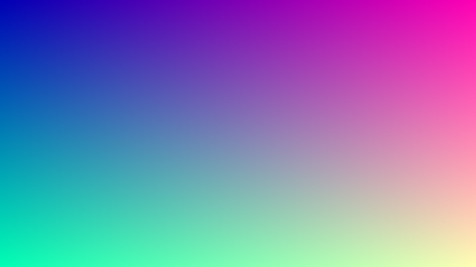
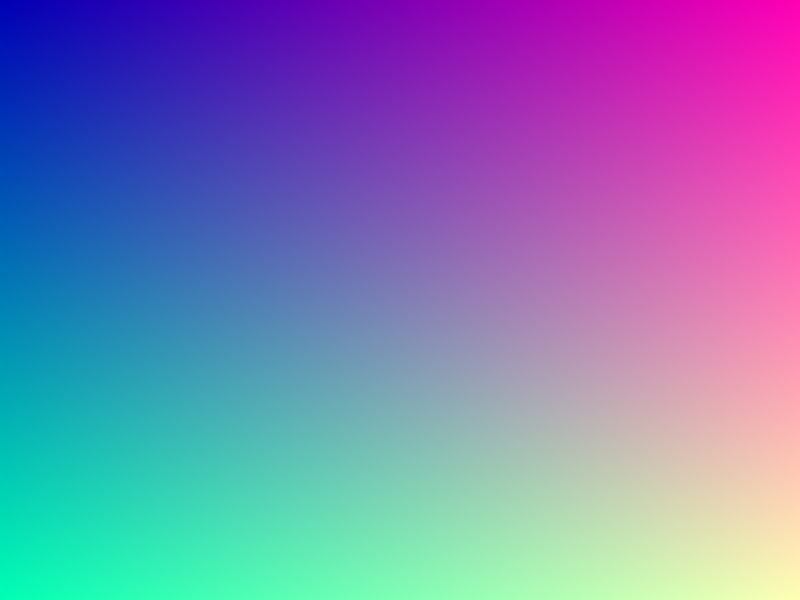
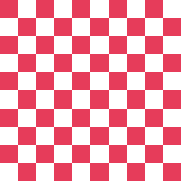
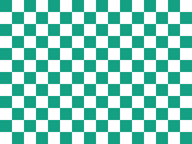
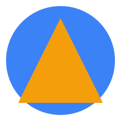

This SVG gets converted into an img internally when the dialog opens. Use this section for the README.md §11 (search-in-page) check of resolving back from a converted element (SVG-converted-to-img).
The extension's selector is [style*="url("], so this is expected to match.
README.md §1: expected behavior is that the menu does not appear, since this isn't an inline style.
Square 1:1
4:3

16:9

Cycle through the dialog's render-mode select (crisp-edges/pixelated/smooth/high-quality) and confirm the visible difference.

Confirm the aspect-ratio GCD calculation doesn't produce NaN/Infinity.
WebP is omitted from this fixture set — no local encoder was available. Prepare one separately (e.g. Canva or an online converter) if needed.


README.md §1: on this page that does contain images, confirm the menu still appears when right-clicking a spot with no image.